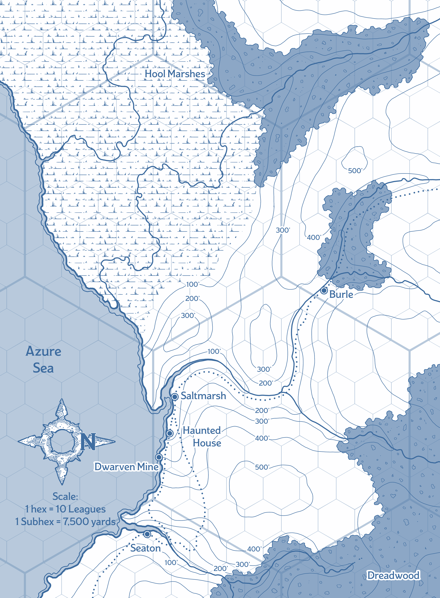

Maps
A.K.A. Keeping track of where you've been
Saltmarsh Map
This is the map of Saltmarsh itself. Map markers will be added for any points of interest that the party discovers.
Saltmarsh Map So Far
The image below is about 2500x3000 pixels in size. Click for full size view.

Locations
- City Gate: Reese entered through these gates. There's a section of wall which is old, crumbling, and badly worn by centuries of rain and wind off the Azure Sea. At all times, two to three guards stand watch here.
- Barracks and Jail: Built of solid stone on a low hill, this is visibly one of the oldest structures in town. The party were brought here to debrief Eliander Fireborn.
- The Wicker Goat: This is the oldest tavern in town, and largely caters to the dwarven miners and town guard.
- Eliander's House: Here, Eliander maintains two things. First, a sanctuary away from the bustle of town, and second the largest library in town by a wide margin. Keeping the library maintained is the job of Krag, the town gravedigger, who also lives here.
- Mining Company Headquarters: A former mansion, purchased by the crown to serve as the clan Copperlocks' headquarters.
- Keledek Tower: Home of the physically-impressive Keledek, the resident wizard in Saltmarsh. The locals are superstitious and distrusting of him, often not even wanting to say his name.
- Faithful Quartermasters of Iuz: Captain Xendros leads a trade delegation, come to Saltmarsh mostly to buy large quantities of fish in the name of Iuz.
- Empty Net: Partially supported by stilts driven into the harbor waters, this is the towns dive bar, filled with people who are probably pirates, smugglers, etc. Troublemakers are thrown out the back door, over the railing, and into the harbour.
- Kester’s Leather Goods: Run by Kiorna Kester, a woman with a strange obsession about rare and exotic hides from strange and dangerous creatures.
- Hoolwatch Tower: Sixty feet tall, this building serves as both the town's main defensive watchtower, and as the guard's headquarters and armoury.
- The Snapping Line: Built from the planks and hulls of half a dozen decommissioned fishing ships, this inn and tavern is frequented by Saltmarsh's fishermen and sailors. The decor is predictably nautical, the rooms are plain but comfortable renditions of a ship’s cabins. The whole place always smells of fish. The owners make 'claw wine', an acquired taste, brewed from lobster meat.
- Council Hall: A large building, made of local stone and hardwood. Above the double doors leading in, there's a wooden sign depicting a net filled with fish. At the top is a small tower with a horn, used to signal the beginning of official council sessions. Each Saturday, the councillors are usually present here in the morning, to hear the many complaints of the townsfolk.
- Weekly Market: This market square opens every Saturday, and is host to traders bringing various goods in from afar. Items from the Player’s Handbook costing up to 150 gp are available for purchase here.
- Primewater Mansion: Home to Gellan Primewater, who throws lavish feasts at least once a week, with all sort of interesting foreign foods. Gellan is known to sometimes lean out his upper-floor windows, and shout orders or questions at the captains of his ships.
- The Dwarven Anvil: Run my an elderly, dark-skinned human woman named Mafera, this establishment uses a Dwarven forge to turn out high-quality goods. Unfortunately, there's always a long backlog of requests for hooks, nails, harpoons, knives, fishing weights, etc. Any metal-based equipment can be ordered here, even expensive things like Plate armour, but there will be a delay.
- Carpenters' Guildhall: A marvel of workmanship, the hall is built without a single nail. The guild are constantly busy building houses and barrels, repairing the docks, etc.
- Crabber’s Cove: Weathered and abandoned buildings, East of the docks. Thousands of crabs have taken up residence among these buildings. This is where some of the local muscle have set up a semi-regular pit fighting ring.
- Temple of Procan: Run by Wellgar Brinehanded, this building is the center of worship for most of the local sailors and fishermen.
- Saltmarsh Cemetery: The town’s cemetery is well-kept, but many of its graves are little more than memorial stones laid for those who died at sea. The Half-Orc Krag is the town gravedigger, as well as something of a town historian and local loremaster.
- Winston's Store: Touting "solid goods at honest prices", Winston sells any basic PHB gear that you would expect sailors or fisherment to need. Rope and oil are definitely in stock, but for actual adventuring gear, you'll need to catch the Weekly Market (see 15)
- Sea Grove of Obad-Hai: A gathering place for seagulls, sailors, and folks from the nearby swamps, this grove is tended by the halfling druid Ferrin Kastilar.
Regional Map
This is a map of the southern coast of Keoland. As with the Saltmarsh map, markers will be added as the party discover things.
For an idea of scale, click here for a map of the Annapolis Valley, with an area highlighted that is about the same as what's depicted on this map.
Regional Map So Far
The image below is about 4200x5700 pixels in size. Click for full size view.

World Map
In case it comes up, there's a good map of the whole Greyhawk known world, the Flanaess region, here.
This world map is roughly current-enough to when Ghosts of Saltmarsh happens.
This map's hexes are 10 leagues, the same size as the large hexes of the Regional Map above.
Saltmarsh is in the area between the Dreadwood and the Hool Marshes, 1/3 from the left and 1/5 up from the bottom.
{kind=link}
{kind=link}
{kind=link}